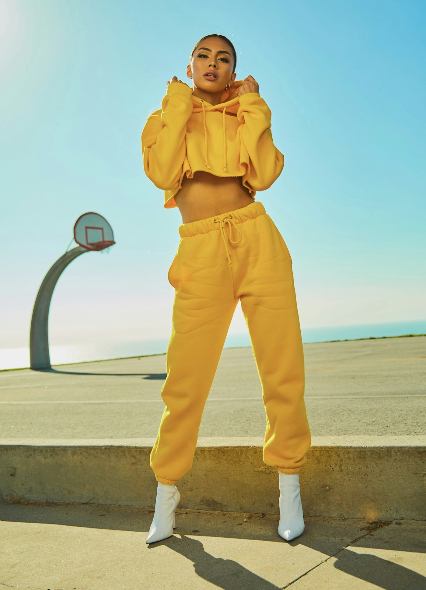
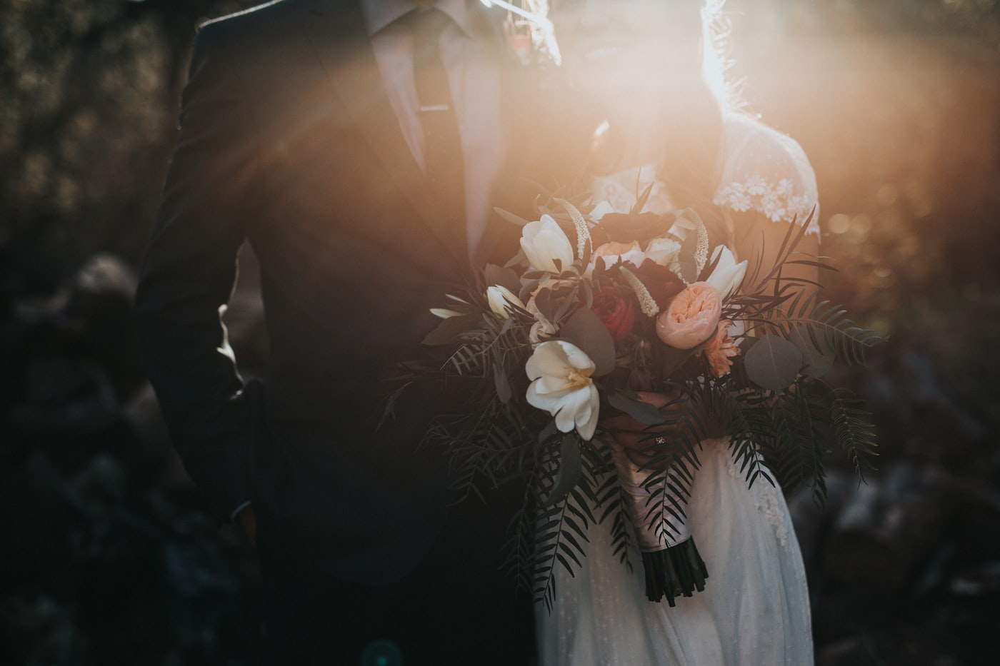

GLOW CREATIVE CO.
GLOW CREATIVE CO.
Commercial Stills & Directed Brand Cinema
01 / 07
Campaign
A modern pavilion at dusk, glowing from the inside out.
Lake Como
Villa Balbianello rising from the edge of the water.
Lookbook
Bold colour, hard sun and a court-side backdrop.
The Ceremony
Blue sky, white balloons and the moment everyone lets go.
Brand Film
The camera up on the roof of the RV, chasing desert light.
Details & Veil
The bouquet, the suit and the small things worth remembering.
Still Life
One product, one surface, nothing competing for attention.
Sunset Dance
Golden light under the trees, and one lift for the album.
Runway
The walk, the lights and the second the look lands.
Reception
Long tables, warm lights and room for everyone.
Editorial
A yellow chair in a quiet room, the story in the details.
Portraits
A kiss under falling petals as the aisle erupts.
Jeffrey Hamilton
Part of the team behind this site.
Jeffrey Hamilton
Part of the team behind this site.